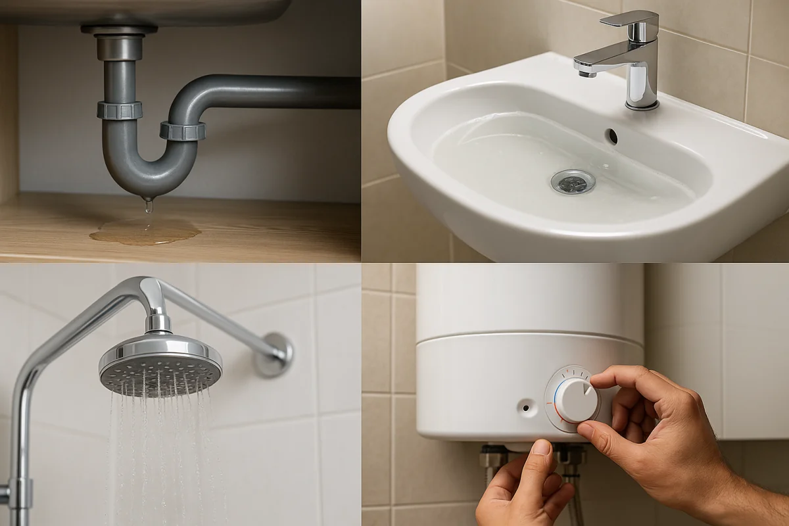

Diagnóstico profesional antes de reparar

Revisamos la llave completa antes de cotizar: pagas solo por lo que realmente necesita

Reparamos llaves de agua que gotean y cambiamos mezcladoras de baño y cocina, monomandos y llaves de paso. Servicio el mismo día con garantía por escrito.
WhatsApp: 52 667 392 2273 · Llamadas: 667 392 2273
Contactar por WhatsAppUna llave goteando desperdicia agua durante todo el día y puede elevar tu recibo de JAPAC
El agua dura de Culiacán deja sarro que endurece empaques, traba cartuchos y pica el cuerpo de la llave
La palanca se afloja, se traba o ya no mezcla bien el agua caliente con la fría
Si la llave de paso no corta el agua por completo, cualquier reparación futura en tu casa se complica
Reparación de goteo, cambio de empaques, vástagos y cartuchos, o instalación de llave nueva.
Mezcladoras de cocina con cuello móvil o fijo. Corregimos goteo, fugas en la base y mangueras vencidas.
Llaves empotradas que gotean o cierran duro. Cambio de vástagos y asientos sin romper de más.
Cambio de cartucho cerámico en monomandos de baño y cocina, o instalación de mezcladora nueva.
Cambio de llaves de paso generales o angulares que ya no cierran. Clave para evitar emergencias.
Llaves de patio, cochera y lavadero. Reparamos el goteo o instalamos llave nueva bien sellada.
El costo depende del tipo de llave, su estado y si se requiere una pieza nueva. Antes de iniciar te damos una cotización clara y confirmamos el trabajo contigo.
Cotización según la falla
Cambio de empaques, vástago o cartucho en llaves de lavabo, fregadero o regadera que gotean.
Mano de obra y pieza por separado
Retiro de la mezcladora vieja e instalación de la nueva con sellado, conexión y prueba de fugas.
Cotización antes de cambiarla
Cambio de llave de paso general o angular de mueble que ya no cierra o gotea por el vástago.
Mándanos foto de tu llave por WhatsApp y te damos presupuesto el mismo día. También puedes revisar nuestra lista de precios de plomería.
Cotizar por WhatsApp
Revisamos la llave completa antes de cotizar: pagas solo por lo que realmente necesita
Las marcas más comunes en casas de Culiacán. Manejamos cartuchos, vástagos y empaques para sus modelos más vendidos.
Muy usadas en obra. Reparamos sus monomandos y mezcladoras; si la refacción ya no existe, proponemos un reemplazo equivalente.
También trabajamos Foset y marcas de importación. Si ya compraste la pieza, solo la instalamos; si no, la conseguimos con ticket.
No todas las llaves que gotean necesitan cambiarse. Nuestro criterio es simple y te lo explicamos antes de cobrar:
Cuando la llave tiene menos de 8-10 años, el cuerpo está sano y solo falló el empaque o el cartucho. La reparación resuelve el goteo y la llave sigue funcionando años.
Cuando el sarro picó el cuerpo, las cuerdas están barridas o ya la repararon varias veces. Pagar reparaciones repetidas sale más caro que una mezcladora nueva.
No te vendemos una mezcladora nueva si tu llave se arregla cambiando un empaque. Vivimos de clientes que nos recomiendan.
Revisamos la llave o mezcladora, identificamos la causa del goteo y te decimos si conviene reparar o cambiar.
Te confirmamos el precio final con pieza incluida antes de empezar, sin sorpresas.
Cerramos el paso de agua, hacemos el trabajo y sellamos cuerdas y conexiones correctamente.
Abrimos el agua, verificamos que no haya goteo, limpiamos el área y entregamos tu garantía de 30 días.
Todas las reparaciones y cambios incluyen garantía de 30 días por escrito. Si la llave vuelve a gotear, regresamos sin costo, y las piezas nuevas conservan la garantía del fabricante. Si detectamos otro problema te lo informamos: también ofrecemos reparación de fugas de agua y corrección de baja presión en Culiacán.
Un goteo constante acumula desperdicio durante todo el día. Si estás renovando el baño, también apoyamos con la instalación de sanitarios en la misma visita.
Solicitar ServicioPrimero revisamos si la falla está en los empaques, el vástago o el cartucho. Después te damos una cotización clara que separa la reparación y cualquier pieza necesaria.
La cotización separa la mano de obra y la pieza. El servicio incluye retiro de la mezcladora vieja, instalación, sellado, prueba de fugas y garantía.
Si la llave tiene menos de 8-10 años y el cuerpo está sano, casi siempre conviene repararla. Si el sarro picó el cuerpo o ya la repararon varias veces, conviene cambiarla.
El desperdicio cambia según la frecuencia y el tamaño de la gota, pero un goteo constante acumula agua durante todo el día. Repararlo evita que el consumo siga creciendo.
Trabajamos Helvex, Rugo, Foset, Dica y Urrea, entre otras, con refacciones compatibles. Si prefieres, tú compras la pieza y nosotros la instalamos.
Sí, 30 días de garantía por escrito. Si la llave vuelve a gotear o hay fuga en la instalación, regresamos sin costo.
Contacta ahora por WhatsApp o teléfono. Servicio el mismo día en Culiacán.
Somos plomeros profesionales en Culiacán con más de 15 años reparando llaves de agua, mezcladoras y llaves de paso en casas, departamentos y negocios. Conocemos los problemas que causa el agua dura de la región y trabajamos con refacciones de calidad para que la reparación dure.
Contáctanos por WhatsApp para servicio el mismo día. Mándanos una foto de tu llave o mezcladora y te daremos un estimado de precio y tiempo de llegada.
Enviar mensaje por WhatsApp